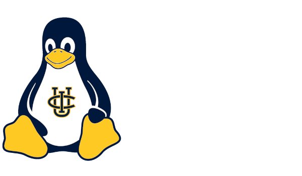

About Us
ALUG@UCI (Anteater Linux User Group at UC Irvine) is a student organization dedicated to promoting the use of Linux and open source software on campus. We welcome students of all backgrounds and experience levels to join us in learning, sharing, and collaborating on all things Linux!
Meet the Team
| Image |
Name |
Role |
Major |
Preferred Distro |
Device(s) |
Fun Fact |
 |
Chris Rios |
President |
Computer Science B.S. |
Pop!_OS |
System76 Adder WS and Steam Deck |
I first gained the reputation as the "Linux-obsessed nerd" back in high school |
|
Kasra Moayedi |
Event Coordinator |
Computer Science and Engineering B.S. |
EndeavourOS |
PC, Thinkpad |
I once hopped between 3 different distros in one night before landing on EndeavourOS! |